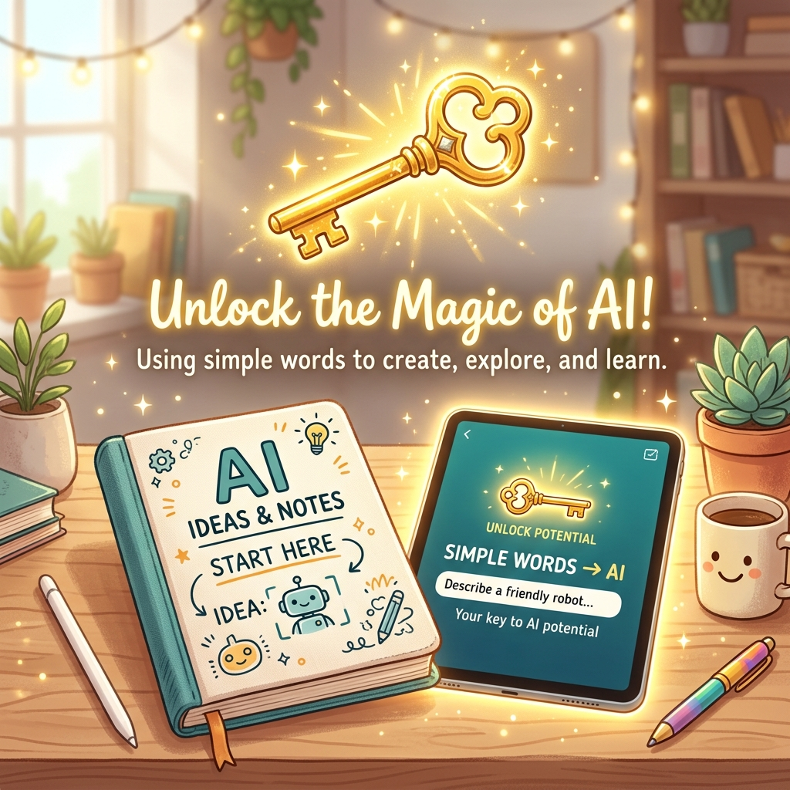

「AIを使ってみたけど、思ったような回答が返ってこない…」そんな経験はありませんか？実は、AIに送る「指示（プロンプト）」的の書き方次第で、AIの出す回答の質は劇的に変わります。今回は、今日から使えるプロンプトエンジニアリングの基本テクニックを、10個のコピペ用テンプレート付きで解説します。
1. 「役割」を明確に与える
AIに向かって「あなたは今からプロ的のライター（または秘書、先生、有名人）です」と宣言してみてください。役割を具体化することで、AIはその目的に沿った口調や知識を選んで回答してくれるようになります。
2. 「背景と目的」をセットにする
「記事を書いて」とだけ頼むのではなく、「30代の会社員向けに、週末の趣味を探すためのブログ記事を、親しみやすいトーンで300文字程度で書いて」と具体的に伝えてみましょう。「誰が、何のために」が必要かを教えるのがコツです。
3. 「出力の形式」を指定する
「箇条書きでまとめて」「表にして」「ステップバイステップで説明して」と出力の形を指定することで、読みやすく整理された結果を返してくれます。
今すぐ使える！10秒コピペ・テンプレート
あなたは秘書です。[宛先] への [件名] に関する謝罪メールを書いてください。状況は [状況] です。ビジネス敬語で、誠実な印象になるように。
あなたはプロの料理研究家です。[食材1] と [食材2] を使って、15分で作れる簡単な夕食のレシピを提案してください。調理手順も詳しく。
[キーワード/概念] について、中学生でも理解できるように分かりやすく説明してください。たとえ話を使ってください。
最後に
プロンプトエンジニアリングは「魔法」ではなく「コミュニケーション」です。人間同士で会話するように、丁寧に意図を伝えることが、AIを強力な相棒にするための第一歩です。